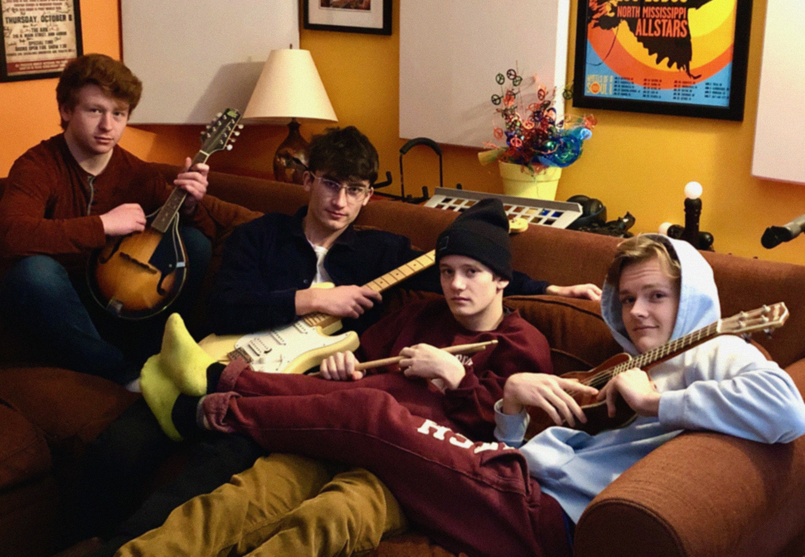

The Left Lanes
From 2016–2021, I was a guitarist, producer, and sometimes vocalist in Ann Arbor-based indie rock band The Left Lanes. We played in shows around Michigan, including local music festivals like Top of the Park and Live on Washington. We also released an album and several singles, with the album published under Youth Owned Records, and several songs entirely engineered and produced by me using Ableton Live.